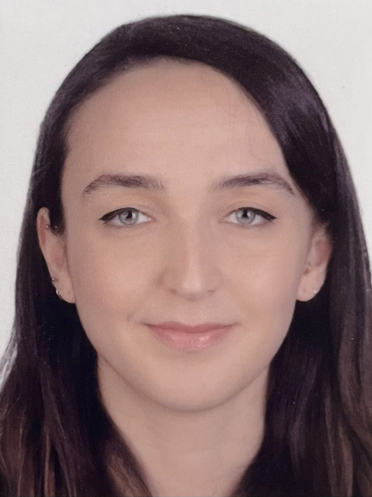

Dinem Kurşun
Product designer with 5 years of experience in turning complex B2B and B2C
ideas into data-based, innovative, and intuitive designs. I create
code-friendly designs that align with the business needs.
Experience
Toptal - Product Designer
September 2022 - Present // United States (Remote)
-
Designing internal products to enhance the productivity and well-being
of teammembers within the Staff Experience team.
-
Developed and implemented an expense management tool, successfully
launching it as a Minimum Viable Product (MVP).
-
Currently engaged in the creation of TopGear, developing a content
management system (CMS) for administrators and an e-commerce website for
both the internal and external teams, facilitating the sale of Toptal
branded merchandise.
Careem - Product Designer
October 2021 - June 2022 // Dubai, UAE (Remote)
-
Led end-to-end product design process for the 1-Click Checkout feature
in the Pay team, collaborating cross-functionally with the PM,
engineers, and the leadership to create Figma prototypes and conduct
user research.
-
Redesigned email receipts into HTML-friendly, dark-mode compatible
component structure with engineers and marketing team, ensuring
consistency across all seven verticals.
- Designed a functional MVP version of jobs.careem.com
Education
Istanbul Technical University - Product Design
2012 - 2017 // Istanbul, Turkey
Universitá degli Studi di Ferrara - Design del Prodotto
Feb - July 2016 // Ferrara, Italy
Erasmus Exchange